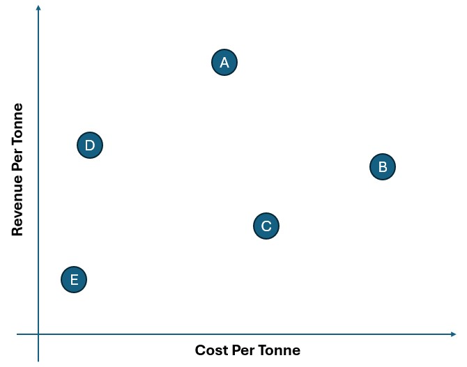
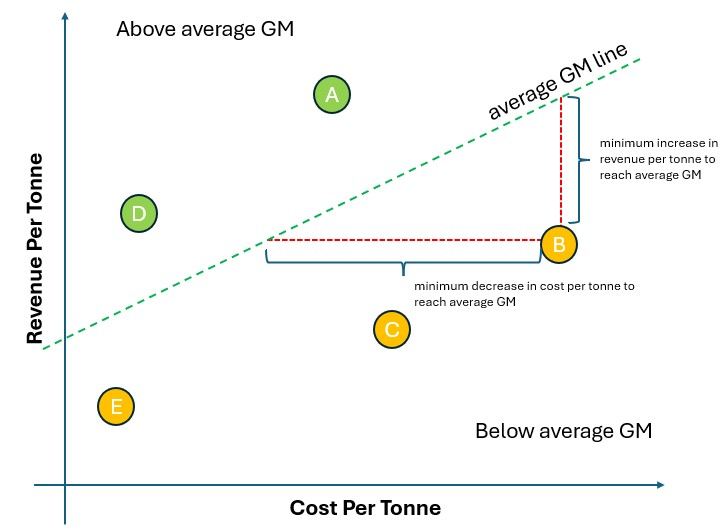
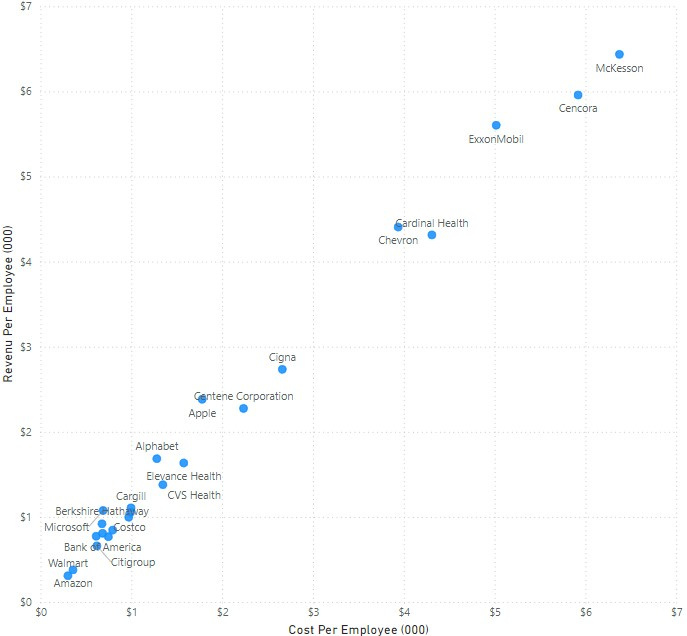
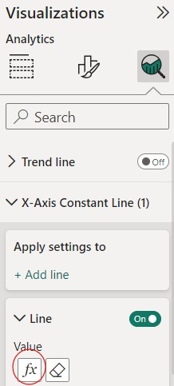
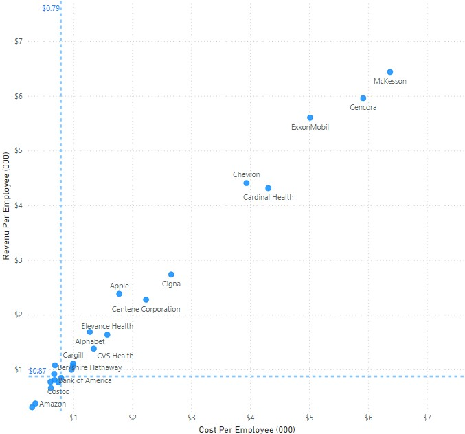
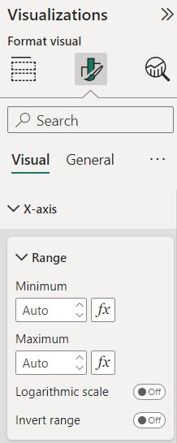
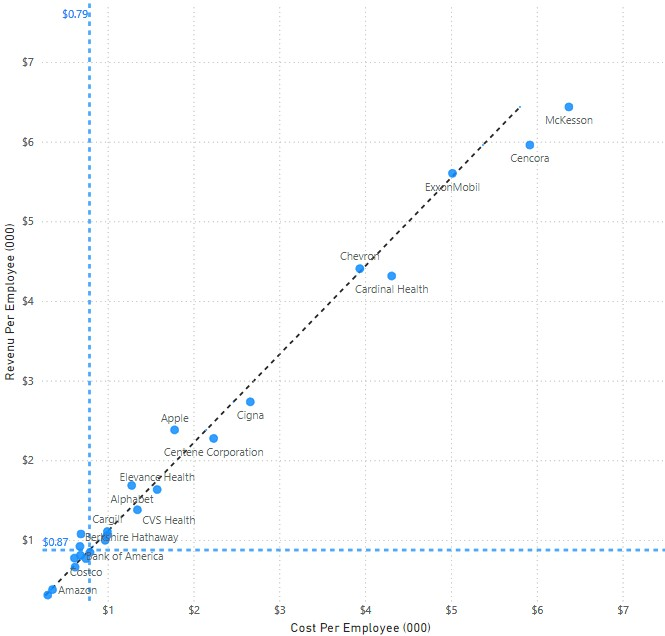

In this post, I present a way to create (certain) dynamic diagonal reference lines in PowerBI. The tool has built in ways to create horizonal and vertical reference lines, but there is no built-in way to create diagonal ones.
Before I show one way of creating them in PowerBI, let me explain what i mean by diagonal reference lines.
Diagonal reference lines?!?
Reference lines in PowerBI charts are horizontal or vertical lines that make it easier for the viewer to compare the objects in a charts to a particular value. This value can be a user-defined constant, or a dynamic value based on a DAX measure or based on pre-defined types of lines. (e.g., mean, median, etc)
Reference lines can be added through the Analytics pane of compatible charts like bar charts, scatter plots or line charts. These lines project the reference line across a value of one of the variables in the chart.
Vertical and horizontal lines are easy to understand and apply– where do diagonal lines come into play though? Diagonal lines can be treated as contour lines which stands for a specific value for a linear function of the two axes variables.
To explain this further, let me give an example. In a previous role, I was working on the gross margin or savings agenda, and we want to identify areas where there may be opportunities for cost savings and deliver gross margin improvement.
Gross margin is the quotient of profit and revenue, but it can also be rewritten as a function of cost and revenue. We can plot products, or brands across cost (or cost per unit) and revenue (or revenue per unit) to show which ones appear overcosted or underpriced. Creating a plot for five different products or brands can give us something like this:

While we can compare the items against one another based on their relative positions horizontally or vertically, we can’t readily say whether they are meeting the gross margin target or if they are above or below the average gross margin. Those that are above such a margin threshold will be easier to push for action, than ones that are already meeting the threshold.
If we go back to the equation of gross margin based on revenue and cost, we can show that the two variables follow a linear function fo a given value of the gross margin.
\[ Gross Margin = 1 - \frac{CostPerTonne}{RevenuePerTonne} = c \]
\[ (1-c)RevenuePerTonne = CostPerTonne \]
This means that each value of gross margin can be represented by a straight, diagonal line in the same axes. If we add a line for the average gross margin, we can update the chart to look something like this:

Items that are above the line will be ones have above average gross margin. The distance of any point to the line will also hold some meaning. Take item B for example. Item B is below the average gross margin. The horizontal distance of B to the diagonal line will be the change (reduction since it needs to go to the left) in cost in order to meet the current average margin. The vertical distance will have the same interpretation but applied to revenue. (i.e., increase in revenue required)
Creating diagonal reference lines in Power BI
I will demonstrate a way of implementing diagonal reference lines in PBI. For this demo, I have taken a list of the largest companies from Wikipedia. (as of this post’s publishing) The list contains 50 companies and contains their name, industry, revenue, profit, number of employees and the country of their headquarters.
The table from the webpage can be directly loaded into Power BI (Get Data >> Web) and a new column Cost is added which is just the difference between Revenue and Profit. For the example, and for simplicity, the resulting table is called Data.
To make it similar to the earlier example, (and we don’t introduce additional math to this post) say we are interested in comparing the average Revenue per Employee (e.g., as a measure of productivity) and average Cost per Employee (note: this does not translate to average salary since a lot of other things go into cost) as the underlying variables for profit margin. These can be computed with the creation of simple measures.
CostPerEmp = SUM(Data[Cost])/SUM(Data[Employees])
RevPerEmp = SUM(Data[Revenue]) / SUM(Data[Employees])A scatterplot can already be generated by using these measures as the x- and y-axes, and using the company names (Name) for the values.

The plot shows an upward slope which implies that companies with higher cost per employee also have more productive employees, and vice versa. The chart, however, has no way to tell the viewer which companies are below or above average (or target) for the two measures, and as there are only two axes, it also gives no indication of their profit margin. The margin can be added as a tooltip or as the bubble shape, but these either require the user to hover over each point, or, in the case of bubble size, will be hard to interpret if there is a very wide or very narrow range of values.
Let us address the current chart’s downside, and try to enrich it by adding reference lines for the average values which the viewer can use to compare the companies to. We will do this for the two axes and also for margin. The steps we will take in this demo are:
Adding the x- and y- reference lines (Constant lines)
Building the average margin series
Fixing the axes ranges
Plotting the average margin line
1. Adding x- and y- constant lines
Power BI can add x- and y- reference lines to compatible visuals through the Analytics pane. If we are adding a line that is not based on the other predefined ones like mean, median, max, then we can make use of the constant lines. As we want to add the average of ratio measures, we should use the last one rather than the average line so it gets computed properly.
For constant lines, the user can key in a fixed number for the line’s value (e.g., a fixed target regardless of selection), or use the fx, or conditional formatting button to set its value to a measure or parameter.

For the x-axis constant line, we will set it to the CostPerEmp measure, and for the y-axis constant line, we will set it to RevPerEmp measure. We set the Data label option to On so we can also see the average value in the resulting chart.

The average can now be seen as $87K for revenue per employee, and $79K for cost per employee. The average is being pulled down by the large number and large size of the companies in the lower left so the values are far from the middle of the overall range.
2. Building the average margin series
Since PowerBI only creates reference lines for each axis, we need a workaround in order to add diagonal lines. In this post, we will do this by creating a series of points that plot the value that we want– which means we create a set of points on the same axes which all have the same margin.
The first step is computing the average margin. Margin is one less the quotient of cost and revenue, so defining a simple measure Margin is straightforward. To calculate the margin of all the companies Margin-All, we need to use CALCULATE() in order to override the filter context. We use ALLSELECTED() rather than ALL() in order to take any external filters like slicers into account.
Margin = 1 - SUM(Data[Cost]) / SUM(Data[Revenue])
Margin-All = CALCULATE([Margin], ALLSELECTED(Data[Name])) Margin-All holds a single value based on filters applied on the visual. For a given value of Margin-All, there will be a corresponding value of CostPerEmp or RevPerEmpl, based on the value of the other. For this demo, we will create a measure to derive the CostPerEmp value to get Margin-All for values of RevPerEmp.
CostPerEmp-ConstMargin = (1-[Margin-All]) * [RevPerEmp]The new measure CostPerEmp-ConstMargin and the original measure RevPerEmp would correspond to pairs of points that give a margin equal to the average of all companies. (based on filters) We will be overlaying these new points as a trend line to generate the reference line.
3. Fixing the axes ranges
Before we generate the margin line, we need to make sure that doing so will not mess up with the axes. If we keep the axes ranges as ‘automatic’, the CostPerEmp and the CostPerEmp-ConstMargin ranges are likely to be different. The latter is likely going to be outside the range of the former so the chart for the average margin line will be ‘zoomed out’.
To overcome this issue, we need to override the automatic axis ranges. The axes ranges can be modified in the visual’s format pane under the Visual tab.

We can specify a fixed number as the minimum and maximum values, but it might be better to use a dynamic range since a hard-coded number might be inappropriate once the user selects or deselects some of the companies.
One way is to set the minimum and maximum values as a factor of the minimum or maximum values of the (original) axes. We will use an arbitrary 20% and define measures to take 80% (i.e., 1-20%) of the lowest value as the axis minimum and then take 120% of the highest value as the axis maximum.
For the calculation, we need to use the iterating aggregation functions MAXX() and MINX() since we still need to compute for the Revenue and Cost per Employee per row, since we do not have this as an existing column in the table.
CPEmax = CALCULATE(MAXX(Data, Data[Cost] / Data[Employees]), ALLSELECTED(Data[Name])) * 1.2
CPEmin = CALCULATE(MINX(Data, Data[Cost] / Data[Employees]), ALLSELECTED(Data[Name])) * 0.8
RPEmax = CALCULATE(MAXX(Data, Data[Revenue] / Data[Employees]), ALLSELECTED(Data[Name])) * 1.2
RPEmin = CALCULATE(MINX(Data, Data[Revenue] / Data[Employees]), ALLSELECTED(Data[Name])) * 0.8We will use these measures as the minimum and maximum values of the two axes by using them in the conditional formatting portion or pressing the fx button in the axis range’s option.
4. Plotting the average margin line
To “add” the average GM line into the chart, we perform the following steps:
Duplicate the scatterplot. (i.e., copy and paste the entire visual) Let us call the one we will use for the GM line the “GM chart” while the other one as the “original chart”
Replace the x-axis field of the GM chart from
CostPerEmptoCostPerEmp-ConstMargin. This should result to a chart with all points along a lineUnder the Analytics pane of the GM chart, turn on the Trend line. Adjust the formatting like color and line style as needed.
Remove the x- and y-axis titles of the by replacing their title with a space. This can be accessed under the format pane of the visual under Visual >> X-axis (or Y-Axis) >> Title. Do not turn off the title as it will change the plot area dimensions.
Set the transparency of the background of the original chart to 100%. (via the visual’s Format tab >> Effects >> Background)
Move the GM chart to the back (via Format ribbon >> Send backward >> Send to back) and then move it behind the original chart.
After going through these steps, we should end up with a chart with not only the first two reference lines, but also a diagonal line for the average GM.

This chart shows that companies like Apple that lie above the diagonal line have higher margin than average, while one like Cardinal Health has below average. This chart would also adjust based on slicer selections– the reference lines and the axes will adjust based on companies selected.
Other uses of diagonal reference line
We went through one application of diagonal reference lines and a way to build them in PowerBI. Aside from plotting margin, other potential use cases for reference lines could be:
Plotting factory capacity and demand or production volume. The reference line can represent a target or average capacity utilization threshold
Evaluating projects based on investment amounts and annual returns. The reference line can represent a target or average payback period or rate of return
Sales value or volume for two different products or channels. The reference line can represent a target or average sales value
There should be other potential use cases, but all these require that the third variable can be represented by the other two, and that it can be represented as linear contour lines in the scatterplot.
As usual, before adding the diagonal lines, or any other element in the chart, one must make sure that they add value and that it is making the report more valuable and understandable to the intended audience.